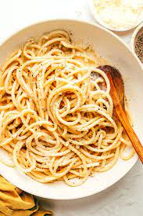

Odin Recipes

Cacio E Pepe Recipe
Ingredients
- Pasta
- Unsalted butter
- Cracked black pepper
- Parmesean cheese
- Pecorino
Steps
- Cook pasta
- Melt the unsalted butter and add the pepper. Cook while swirling in a pan for about 1 minutes
- Add sauce, parmesesan cheese, and the pecorino to the pasta